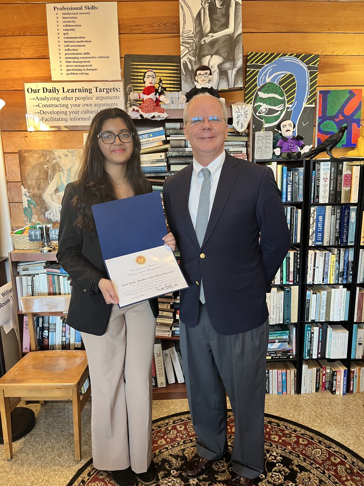

AI-powered irrigation recommendations built on physics-informed neural networks, designed for diverse agricultural contexts worldwide.
WaterWise is an AI-powered irrigation recommendation app that uses physics-informed neural networks (PINNs) and stochastic differential equations to generate field-specific water usage recommendations. It integrates with NASA SMAP satellite soil moisture data and is designed to work across diverse agricultural contexts in 10+ languages.
The underlying framework — developed through research at the University of Louisville — uses model predictive control to optimize water delivery. Simulations show a projected 22.3% reduction in water usage compared to standard irrigation schedules.
Launch Video ↗Enter your crop type, field size, and location. WaterWise pulls NASA SMAP satellite soil moisture data automatically for your region.
Our physics-informed neural network processes soil moisture, weather patterns, and crop-specific parameters to model optimal water needs.
Get actionable irrigation recommendations in your language. No technical expertise required — WaterWise handles the science.
3rd place special award from the American Mathematical Society, recognizing the spectral-stochastic mathematical framework underlying WaterWise.
The physics-based neural network framework has been submitted to arXiv (ACM Classification I.2.6; J.3; I.5.1) and is in the journal submission pipeline.
Developed in collaboration with University of Louisville faculty in machine learning and biomedical science, with ongoing research support from Dr. Barati.
WaterWise was selected as the winner of the Congressional App Challenge for Kentucky's 2nd Congressional District. The app received formal recognition from Representative Brett Guthrie (KY-02), who highlighted its potential impact on water conservation and agricultural efficiency.
The Congressional App Challenge is a nationwide competition that recognizes outstanding student-built applications. WaterWise was chosen from entries across the district for its technical innovation and real-world applicability.
